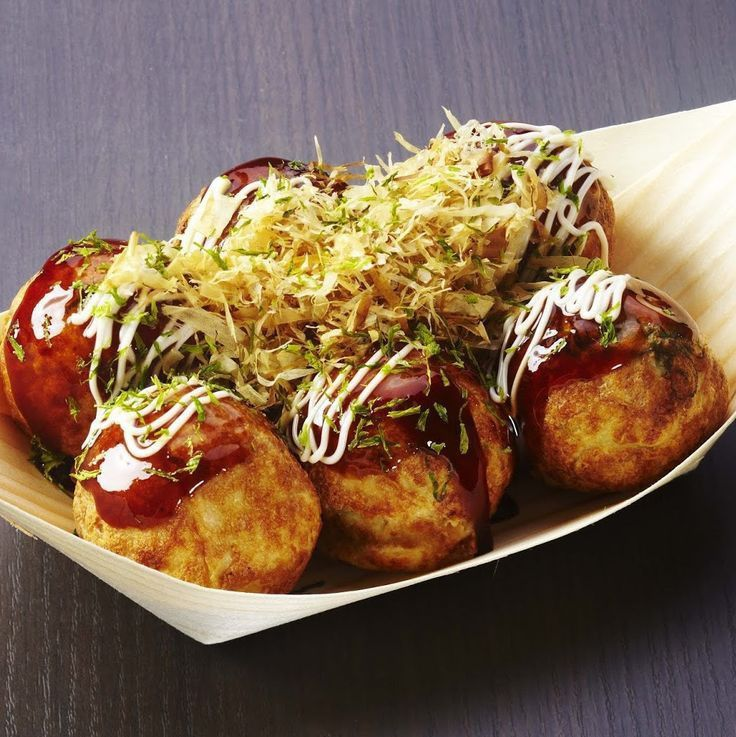
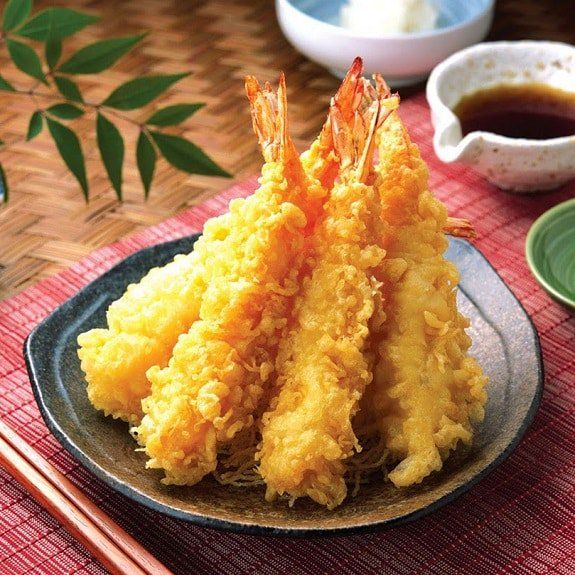
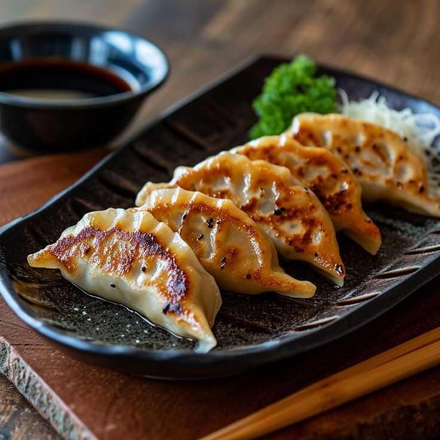
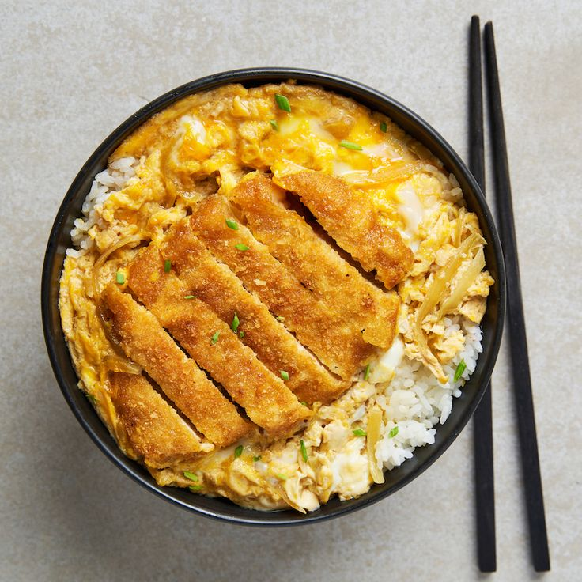
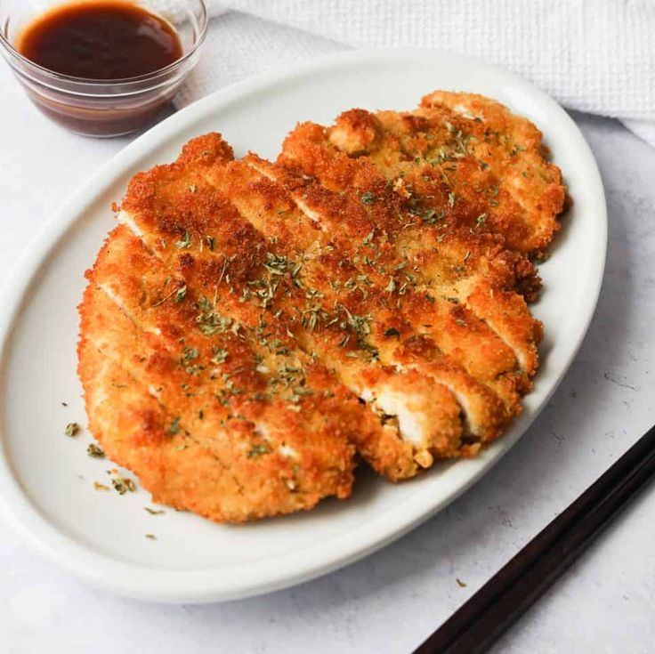
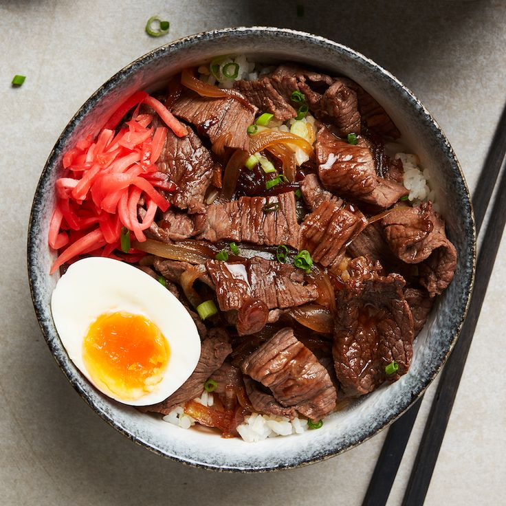
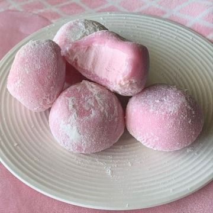
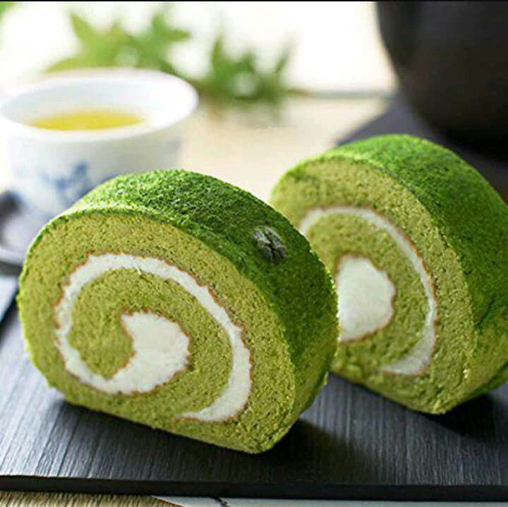
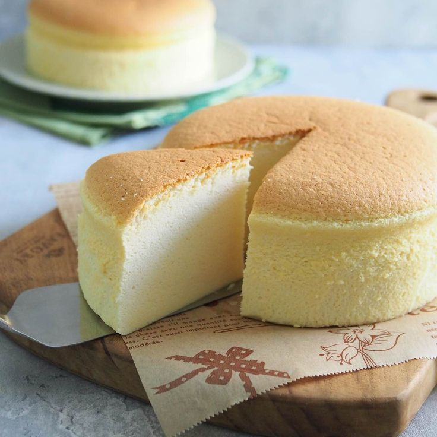

Small Meals
Takoyaki

You need:
- Batter
- Octopus (of course)
- Dashi Powder
- Soy Sauce
- Bonito Flakes
- Pickled Ginger
- Tempura Scraps
- Green Onions
- Seaweed
- Takoyaki Sauce
- Takoyaki Pan
Step by Step:
- Prepare takoyaki pan
- Once done preparing, cook the takoyaki
- Use chopsticks to flip the takoyaki
- Cook for 4-5 minutes
- When you're finished cooking, put seawood, condiments, etc. on takoyaki and enjoy
Tempura

You need:
- Shrimp
- Tempura Batter
- Deep pan/Frying Pan
- Oil
Step by Step:
- Prepare the frying pan and put oil
- Coat the shrimp with the batter
- Once you're done coating the tempura/shrimp, start frying
- Cook for 2-3 minutes
- Once done frying, drain the oil and enjoy
Tempura

You need:
- Ground pork or chicken
- Cabbage
- Gyoza Wrappers
- Vegetable Oil
- Frying Pan
Step by Step:
- Prepare the ground pork
- Heat the pan with oil
- Wrap the gyoza
- Cook for 2-3 minutes
- Once done cooking, transfer the gyoza on a plate and enjoy
Meals
Katsudon

You need:
- Boneless porkchop/tonkatsu
- Oil
- Salt and Pepper
- Egg, Flour, Breadcrumbs
- Rice
- Vegetable Oil
- Onions
- Rice Bowl
- Frying Pan
Step by Step:
- Prepare the chicken/porkchop
- Dip the chicken/porkchop in the Egg>Flour>Breadcrumbs
- Heat the pan with oil
- Cook the onions for 2 minutes
- Place the chicken/porkchop on the pan and cook
- Cook for 3-5 minutes
- Once done cooking, transfer to a rice bowl
- Place onions, soy sauce, condiments, and etc.
- Enjoy
Chicken Katsu

You need:
- Boneless Chicken
- Egg, Flour, Breadcrumbs
- Rice
- Tonkatsu Sauce
- Vegetable Oil
- Frying Pan
Step by Step:
- Prepare the chicken
- Dip the chicken into the Egg first then Flour>Breadcrumbs
- Heat pan with oil
- Cook for 3-4 minutes
- Once done cooking, transfer the chicken on a plate and enjoy
Gyudon

You need:
- Beef
- Onion
- Green Onions
- Rice
- Soy Sauce
- Oil
- Dashi Stock
- Pan
Step by Step:
- Heat pan with oil
- When pan is heated, cook the onions thne the beef
- Cook for 4-5 minutes
- Once done cooking, put it in a rice bowl
- Put the green onions, soy sauce, and etc. then enjoy
Desserts
Mochi

You need:
- Glutinous Rice
- Cornstarch
- 1/4 Sugar
- 3/4 Water
Step by Step:
- Mix the glutinous rice, sugar, and water
- Microwave for 1 minute
- Steam for 10-15 minutes
- Shape mochi
- Dust it with the cornstarch and enjoy
Matcha Swiss Roll

You need:
- 4 Eggs
- Sugar
- Vegetable Oil
- Milk
- Flour
- Matcha
- Whipping Cream
Step by Step:
- Preheat oven
- Make the batter
- Put the matcha in the batter and mix
- Transfer the batter in a pan
- Bake for 10 minutes
- Once done baking, smear whipping cream and roll the cake and enjoy
Japanese Cheesecake

You need:
- Unsalted butter
- Milk
- Flour
- Cream cheese
- Cornstarch
- 6 egg yolks
- Vanilla Extract
Step by Step:
- Preheat oven
- Make the batter
- Transfer the batter into a pan
- Bake for 20 minnutes
- When done baking, let it cool for 10 minutes
- Dust with cornstarch